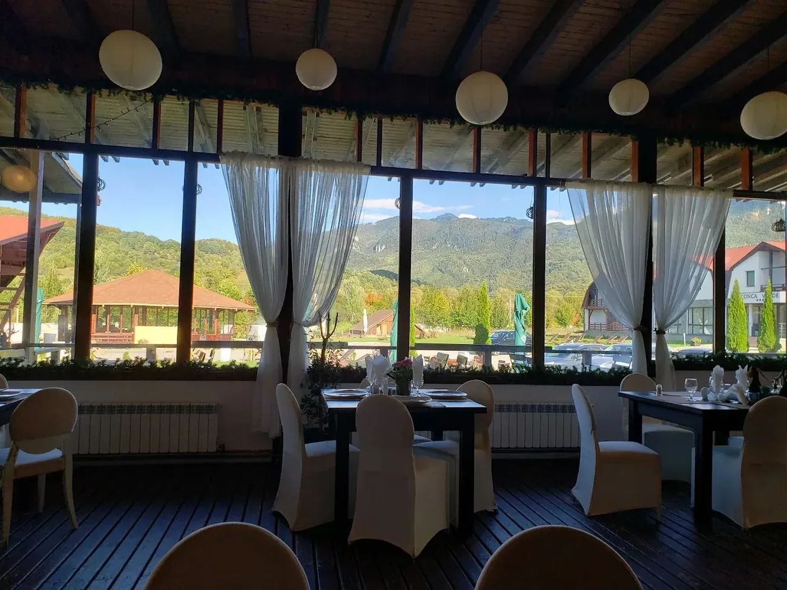

Top 10 Atracții Turistice Brașov 2026 — Ghid Complet pentru un Weekend la Munte
Publicat: 6 Mai 2026 · De Conca Verde

Brașovul este, fără îndoială, una dintre cele mai vizitate destinații turistice din România — peste 2.5 milioane de vizitatori anual, atrași de combinația unică de istorie medievală, peisaje montane spectaculoase și gastronomie tradițională. În acest ghid îți prezentăm top 10 atracții turistice din Brașov și împrejurimi pentru 2026, cu distanțe exacte, prețuri actualizate și sfaturi practice.
Toate aceste atracții sunt accesibile la maxim 1 oră de Conca Verde — Complexul nostru Turistic din Cheile Râșnoavei. Dacă plănuiești o vacanță în zonă, cazarea lângă Brașov e prima decizie pe care trebuie să o iei.
1. Castelul Bran — "Castelul lui Dracula" 🧛
Distanța de la Conca Verde: 20 km · 25 minute
Bilet 2026: ~50 lei adulți, ~25 lei copii (7-17 ani), gratuit sub 7 ani
Program: Marți-Duminică 9:00-18:00 (vara), 9:00-16:00 (iarna). Luni deschide la 12:00.
Construit în 1388 ca punct de vamă pe granița dintre Transilvania și Valahia, Castelul Bran este cea mai vizitată atracție turistică din România — peste un milion de vizitatori anual. Asocierea cu Dracula vine din romanul lui Bram Stoker (1897), dar nu există dovezi istorice că Vlad Țepeș a locuit aici. Ce vei găsi: arhitectură medievală spectaculoasă, colecție de artă a Reginei Maria, atmosferă gotică unică.
Sfat: Vizitează dimineața devreme (9:00) sau după-masa (15:00+) ca să eviți cozile. Cumpără biletul online pe brancastle.com. Vizita durează 60-90 minute. Citește ghidul complet →
2. Cetatea Râșnov — fortăreața medievală 🏰
Distanța de la Conca Verde: 5 km · 8 minute
Bilet 2026: ~25 lei adulți
Program: 9:00-18:00 (vara), 9:00-16:00 (iarna)
O cetate țărănească din secolul XIII, ridicată pe un deal de 200 metri deasupra orașului Râșnov. Una dintre cele mai bine conservate din Europa de Sud-Est. Urcușul pe jos durează ~15 minute și oferă o priveliște spectaculoasă peste Țara Bârsei. Nu rata fântâna legendară săpată în piatră, despre care se spune că ar fi avut adâncimea de 146 metri.
3. Piața Sfatului + Biserica Neagră Brașov 🏛️
Distanța de la Conca Verde: 18 km · 25 minute
Bilet Biserica Neagră: ~25 lei adulți
Inima medievală a Brașovului — Piața Sfatului este un loc magic, încadrată de clădiri în stil Renaissance saxon. Biserica Neagră, construită între 1383-1477, este cea mai mare catedrală gotică din sud-estul Europei (89 m lungime). În interior: cea mai mare colecție de covoare orientale din Europa și o orgă din 1839 cu 4.000 de tuburi.
Plimbă-te apoi pe Strada Sforii — una dintre cele mai înguste străzi din Europa (1.32 m lățime).
4. Poiana Brașov — Stațiune montană ⛷️
Distanța de la Conca Verde: 28 km · 35 minute
Telecabină: ~50 lei dus-întors
Sezonul ideal: Iarna pentru schi, vara pentru drumeții
Cea mai populară stațiune de schi din România, cu 13 pârtii cu lungime totală de 13.8 km. Telecabina Cristianul Mare urcă la 1.802 m altitudine, oferind priveliști de 360° asupra Munților Postăvarul. Vara: drumeții pe trasee marcate, mountain biking, parc de aventură.
5. Tâmpa — telecabină + drumeție 🚠
Distanța de la Conca Verde: 18 km (Brașov)
Telecabină: ~25 lei dus-întors
Muntele care veghează Brașovul (960 m altitudine). Cea mai bună priveliște asupra orașului medieval. Poți urca cu telecabina (3 minute) sau pe jos prin trasee marcate (~1.5 ore). Sus găsești o cabană cu mâncare tradițională și panorama clasică Brașov pe care o vezi în toate cărțile poștale.
6. Castelul Peleș Sinaia 👑
Distanța de la Conca Verde: 55 km · 50 minute
Bilet 2026: ~60 lei adulți (turul de bază)
Program: Miercuri-Duminică 9:15-17:00, închis Luni-Marți
Capodoperă neo-renascentistă din 1883, considerat cel mai frumos castel din România. Reședință de vară a Regelui Carol I, cu 160 de camere, prima clădire din Europa cu electricitate proprie. Grădinile regale, Castelul Pelișor (mai mic, mai intim) și sala armelor cu 4.000 de piese sunt must-see.
7. Cheile Râșnoavei — drumeție lângă Conca Verde 🥾
Distanța: 0 km — chiar din Conca Verde
Bilet: Gratuit · Sezon: Tot anul
Una dintre cele mai accesibile chei din România. Trasee ușoare pentru familii (1-2h, ~4 km dus-întors), pe malul râului, prin defilee de calcar. Vara: răcoare naturală. Toamna: culori spectaculoase. Iarna: peisaj magic cu zăpadă. Vezi ghidul complet trasee →
8. Dino Parc Râșnov — pentru familii cu copii 🦖
Distanța de la Conca Verde: 5 km · 7 minute
Bilet 2026: ~40 lei adulți, ~30 lei copii
Durata vizitei: 2-3 ore
Cel mai mare parc de dinozauri din Europa de Sud-Est, cu peste 50 de replici la scară reală. Are planetariu 7D, cinema 5D, zone tematice pe perioade geologice. Perfect pentru familii cu copii 4-12 ani — combinabil cu Cetatea Râșnov (sunt vecini).
9. Piatra Craiului (Zărnești) 🏔️
Distanța de la Conca Verde: 12 km · 20 minute (până la Zărnești)
Acces traseu: Gratuit (parc național)
Parc Național spectaculos, cu cea mai lungă creastă calcaroasă din România (~25 km). Trasee pentru toate nivelurile: de la plimbări ușoare la ascensiuni alpine pentru experimentați. Cabana Curmătura (1.470 m) e accesibilă în 2-3 ore de mers. Faună sălbatică: capre negre, urși, vulpi.
10. Bușteni — Cabana Babele și Sfinxul ⛰️
Distanța de la Conca Verde: 40 km · 40 minute (până la Bușteni)
Telecabina Bușteni-Babele: ~80 lei dus-întors
Telecabina te urcă la 2.206 m altitudine, în Munții Bucegi. Sfinxul și Babele sunt formațiuni stâncoase legendare, sculptate de vânt și apă. Priveliște spre Munții Făgăraș. De la Babele poți merge la Cabana Caraiman (1h) sau Vârful Omu (2h) — cel mai înalt vârf din Bucegi (2.505 m).
📅 Itinerariu recomandat: 3 zile în zona Brașov
Ziua 1 (Vineri): Sosire la Conca Verde · prânz la restaurant tradițional · Cetatea Râșnov + Dino Parc (după-masa) · cină la Conca Verde cu muzică live.
Ziua 2 (Sâmbătă): Castelul Bran (dimineața, 9:00-11:00) · prânz la Conca Verde · Brașov centru istoric (Piața Sfatului, Biserica Neagră, Strada Sforii) · cină în Brașov sau înapoi la Conca Verde.
Ziua 3 (Duminică): Cheile Râșnoavei drumeție matinală (1-2h) · prânz la Conca Verde · Poiana Brașov telecabină (după-masa) · plecare seara.
🏨 Unde te cazezi pentru turismul Brașov?
Conca Verde este oprirea ideală pentru un weekend cu toate atracțiile Brașov-Bran-Râșnov. Iată de ce:
- 📍 Locație centrală: 18 km Brașov, 20 km Bran, 5 km Râșnov, 28 km Poiana Brașov, 55 km Sinaia
- 💰 Prețuri 30-50% mai mici decât hotelurile din centrul Brașov sau pensiunile din Bran
- 🅿️ Parcare gratuită pe 20.000 mp (rar la atracțiile turistice)
- 🍽️ Restaurant 300 locuri pe loc — bucătărie tradițională, muzică live weekend
- 🌲 20.000 mp natură privată — Cheile Râșnoavei chiar la ieșire
- ⭐ 4.3/5 din 821 recenzii Google
Rezervă camera ta acum:
📞 0799 597 083 (WhatsApp 24/7)
🌐 Vezi camerele și prețurile →
🍽️ Meniu restaurant →
💍 Ai nuntă? Locație nuntă în natură →